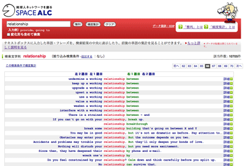
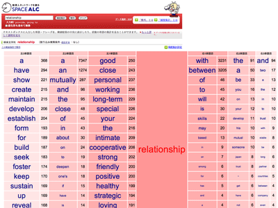
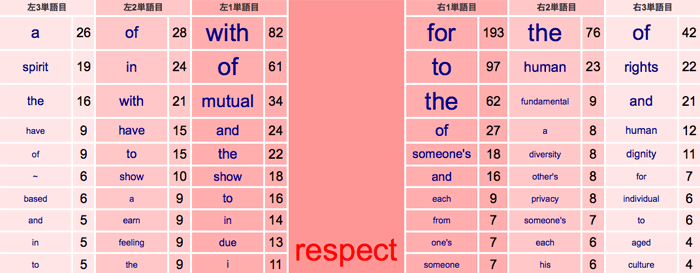
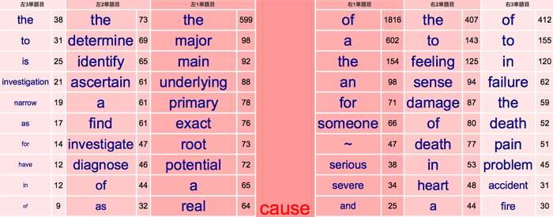
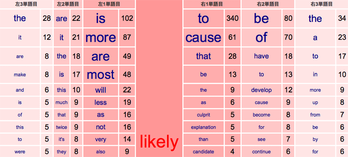

【Memo】『英辞郎 on the WEB』の新機能「整列」「頻度集計」のβ版を公開中
『英辞郎 on the WEB』の特長のひとつとして、幅広い内容の例文が豊富に収録されていることが挙げられます。その例文を、より見やすく表示する「整列」機能と、検索キーワードが どのような単語と共起する（いっしょに使われる）ことが多いのかを頻度順に表示することができる「頻度集計」機能をβ公開しています。
「整列」とは？
|  | 検索キーワードを画面の中央に整列させて、検索キーワードの前後でどのような単語や表現が使われているのかを見やすく（分かりやすく）表示します。このような表示形式は KWIC（Keyword In Context、クウィック）と呼ばれています。 検索キーワードの左右で使用されているいろいろな単語を単語別に集計したいときは、以下の「頻度集計」を使います。 |
「頻度集計」とは？
|  | 検索キーワードの前後 3 単語までの範囲において、単語別に出現回数をカウントして、出現回数の多いものから順に 20 位まで表示します。 左の画面は、relationship の直後（右 1 単語目）で使われる単語の 1 位は with（〜との関係）、2 位は between（〜間の関係）であることを示しています。 relationship の直前（左 1 単語目）で使われる単語の 1 位は good（良い関係）、2 位は close（緊密な関係）であることを示しています。 すなわち、コロケーション（語と語の結び付きの関係）を瞬時に調べることができます。 |
こんなふうに使ってみよう
例：日本語でよく使う「シビアな人」「シビアな考え方」の「シビア」って英語ではどんな風に使われるの？
- 『英辞郎 on the WEB』で「シビア」を和英検索してみます。
- 英語では "severe" であることがわかります。
- severe を英和検索すると severe を含む表現がたくさん表示されます
- 同じ "severe" を含む例文を「整列」機能で検索すると、より見やすい形で表示することができます。
- "severe" を「整列」機能で検索するとこのように表示されます → 結果画面参照
- 先ほど「整列」させた例文中の "severe" の前後にはどのような単語が多く使われているのかを知るには「頻度集計」機能を使います。
- "severe" といっしょに使われる頻度の高い単語から順に上位20件が、出現回数とともにこのように表示されます → 結果画面参照
「頻度集計」をさらに学習に役立てよう
「頻度集計」機能を使用すると、さまざまな単語の特徴や用法など意外な発見ができたりするなど、英語学習や英文作成の一助となりますので、ぜひご活用ください。

- respect の右１単語目に入っている前置詞で出現頻度の高いのは for と of だということがわかります。
→ それぞれをクリックすると… - respect for → 検索結果が表示され、「〜の（に対する）尊重」の意味合いで使われることがわかります。
respect to → 検索結果が表示され、with respect to の形で「〜に対する」の意味合いでもっとも多く使われていることがわかります。
- 頻度集計結果を見ても、respect の左 1 単語目を見ても with がもっとも多く使われているようです。
- 次に、左 1 単語目でもっとも多く使われている動詞を探すと、show であることがわかります。
→show をクリックすると… - show respect → 検索結果に「（～を）尊敬する」の意味が表示され、「尊敬する」と動詞として使いたい場合 show をともなえば良いことがわかります。
- また、左 2 単語目を見ると、 have もよく使用されるようです。
→ have をクリックすると… - have _ respect → 検索結果が表示され、"have deep respect for" "have enormous respect for" "have great respect" など、respect （敬意）を修飾する際に使われる形容詞がわかります。

- cause の左 1 単語目の 2 番目と 3 番目が major と main で、それぞれの出現回数が同じような数であることがわかります。
→ それぞれをクリックすると… - major cause → 検索結果が表示され、「〔いくつかある原因のうちの〕主な［大きな］原因」の意味で使われることがわかります。
main cause → 検索結果が表示され、「主な原因、主要因、主因」の意味で使われることがわかります。 - どちらも同じような意味で、使用頻度がさほど変わらないことがわかり、英作文の際の単語選択の助けとなります。
例 3：likely（ありそうな、起こり得る）を頻度集計すると…

- likely の左 1 単語目は is、右 1 単語目は to が最上位に来ていることがわかり、熟語として覚えることの多い "be likely to" の形での出現頻度の高さがうかがえます。
- 右 1 単語目の 2 番目には cause が来ており、"likely cause" の形での出現頻度が高くなっています。likely は、"be likely to" や "be likely that" のように叙述用法で使われることが多いですが、意外にも cause の場合は、限定用法として高頻度で使われることがわかります。
ほかにもいろいろと興味深い発見があるかもしれません。ぜひ英語学習にお役立てください。